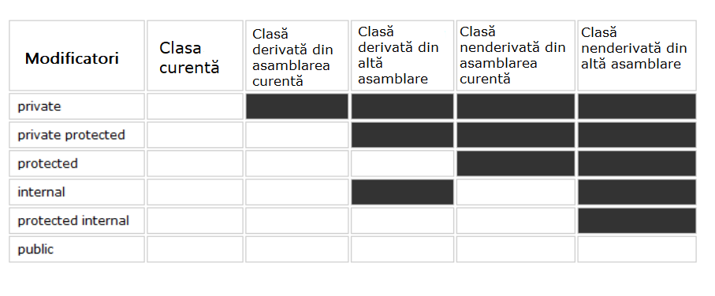

Modificatori de acces.
Toate câmpurile, metodele și celelalte componente ale unei clase
au modificatori de acces. Modificatorii de acces
permit definirea domeniului de vizibilitate pentru componentele unei clase. Adică, modificatorii de
acces determină contextul în care o variabilă sau o metodă poate fi
utilizată.
În limbajul C# se folosesc următorii modificatori de acces:
- private: componentă
închisă sau privată a unei clase sau structuri. Componenta privată este
accesibilă doar în cadrul clasei sau structurii sale.
- private protected: componenta clasei
este accesibilă din orice loc în clasa sa sau în clasele derivate definite în
aceeași asamblare.
- file: adăugat în versiunea
C# 11 și se aplică tipurilor, de exemplu, claselor și structurilor. O clasă sau
structură cu acest modificator este accesibilă doar din fișierul de cod curent.
- protected: această componentă
a clasei este accesibilă din orice loc în clasa sa sau în clasele derivate. Clasele
derivate pot fi situate în alte asamblări.
- internal: componentele unei clase sau
structuri sunt accesibile din orice loc din aceeași asamblare, dar nu sunt accesibile pentru alte
programe și asamblări.
- protected internal: combină
funcționalitatea modificatorilor protected și internal. O astfel de componentă a clasei
este accesibilă din orice loc din asamblarea curentă și din clasele derivate care pot fi
situate în alte asamblări.
- public: componentă publică,
accesibilă a unei clase sau structuri. O astfel de componentă este accesibilă din orice
loc din cod, precum și din alte programe și asamblări.

Trebuie menționat că acești modificatori pot fi aplicați
atât componentelor unei clase, cât și componentelor unei structuri, cu excepția
faptului că structurile nu pot folosi modificatorii private
protected, protected și protected internal, deoarece
structurile nu pot fi moștenite.
Toate clasele și structurile definite direct în afara altor tipuri (clase
și structuri) pot avea doar modificatorii public,
file sau internal.
Putem defini explicit un modificator de acces sau putem să nu-l
specificăm:
|
public class Person
{
string name;
public Person(string name)
{
this.name = name;
}
public void Print() => Console.WriteLine($"Name: {name}");
}
|
Dacă pentru componente nu este definit un modificator de acces, implicit se
aplică modificatorul private. De exemplu, în
exemplul de mai sus, variabila name va avea implicit modificatorul private.
Clasele și structurile declarate fără modificator și care sunt
situate în afara altor tipuri au implicit acces internal, iar clasele și structurile imbricate, precum și celelalte componente ale
claselor/structurilor, au implicit modificatorul private.
De exemplu:
|
class Phone
{
struct Camera
{
}
}
|
Aici clasa Phone nu este imbricată în nicio altă
clasă/structură, deci are implicit modificatorul internal. Structura Camera este imbricată, deci, ca și celelalte componente ale clasei, are
implicit modificatorul private.
Modificatori în cadrul proiectului curent.
Să vedem un exemplu și să creăm următoarea clasă
State:
|
class State
{
// este
similar cu private string defaultVar;
string defaultVar ="default";
// câmpul este accesibil doar din clasa curentă
private string privateVar =
"private";
// accesibil din clasa curentă și din clasele derivate definite în
acest proiect
private protected string protectedPrivateVar
= "protected private";
// accesibil din clasa curentă și din clasele
derivate
protected string protectedVar =
"protected";
// accesibil în orice loc din proiectul curent
internal string internalVar = "internal";
// accesibil în orice loc din proiectul curent și din clasele derivate
în alte proiecte
protected internal string protectedInternalVar = "protected
internal";
// accesibil
în orice loc din cod, precum și din alte programe și asamblări
public string publicVar =
"public";
// implicit are modificatorul private
void Print() => Console.WriteLine(defaultVar);
// metoda este accesibilă doar din clasa
curentă
private void PrintPrivate() =>
Console.WriteLine(privateVar);
// accesibilă
din clasa curentă și din clasele derivate definite în acest proiect
private protected void PrintProtectedPrivate() =>
Console.WriteLine(protectedPrivateVar);
//
accesibilă din clasa curentă și din clasele derivate
protected void PrintProtected() => Console.WriteLine(protectedVar);
// accesibilă în orice loc din proiectul curent
internal void PrintInternal() => Console.WriteLine(internalVar);
// accesibilă în orice loc din proiectul
curent și din clasele derivate în alte proiecte
protected internal void PrintProtectedInternal() =>
Console.WriteLine(protectedInternalVar);
//
accesibilă în orice loc din cod, precum și din alte programe și
asamblări
public void PrintPublic() =>
Console.WriteLine(publicVar);
}
|
Deoarece clasa State nu are un modificator explicit, implicit are modificatorul
internal, astfel că va fi accesibilă din orice loc al acestui proiect, dar nu va fi
accesibilă din alte programe și asamblări.
Clasa State are șase câmpuri pentru fiecare nivel de acces. Plus o
variabilă fără modificator, care implicit este private. De asemenea, sunt definite șapte
metode cu diferiți modificatori, care afișează valorile variabilelor corespunzătoare
în consolă. Deoarece toți modificatorii permit utilizarea componentelor clasei în
cadrul clasei respective, toate variabilele clasei, inclusiv cele private, sunt accesibile tuturor metodelor
sale, deoarece toate se află în contextul clasei State.
Acum să vedem cum putem folosi variabilele clasei State într-o altă
clasă, să zicem că se numește StateConsumer și este situată în același proiect:
|
class StateConsumer
{
public void PrintState()
{
State state = new State();
// nu
putem accesa variabila defaultVar,
// deoarece are modificatorul private și clasa StateConsumer
nu o vede
Console.WriteLine(state.defaultVar); // Eroare, nu se poate
accesa
//
același lucru este valabil și pentru variabila privateVar
Console.WriteLine(state.privateVar); //
Eroare, nu se poate accesa
// nu putem accesa variabila protectedPrivateVar,
// deoarece clasa
StateConsumer nu este o clasă derivată din clasa State
Console.WriteLine(state.protectedPrivateVar); // Eroare, nu se poate accesa
// nu putem accesa variabila protectedVar,
// deoarece clasa
StateConsumer nu este o clasă derivată din clasa State
Console.WriteLine(state.protectedVar); //
Eroare, nu se poate accesa
// variabila internalVar cu modificatorul internal este
accesibilă din orice loc din proiectul curent,
// deci putem obține sau modifica valoarea
sa
Console.WriteLine(state.internalVar);
// variabila protectedInternalVar este de asemenea accesibilă din orice loc din
proiectul curent
Console.WriteLine(state.protectedInternalVar);
// variabila publicVar este accesibilă public
Console.WriteLine(state.publicVar);
}
}
|
Astfel, în clasa StateConsumer am putut accesa doar variabilele internalVar,
protectedInternalVar și publicVar, deoarece modificatorii lor permit utilizarea în acest
context.
La fel stau lucrurile și cu metodele:
|
class StateConsumer
{
public void PrintState()
{
State state = new State();
state.Print(); // Eroare, nu se poate accesa
state.PrintPrivate(); // Eroare, nu se poate accesa
state.PrintProtectedPrivate(); // Eroare, nu se poate accesa
state.PrintProtected(); // Eroare, nu se
poate accesa
state.PrintInternal();
// corect
state.PrintProtectedInternal(); // corect
state.PrintPublic();
// corect
}
}
|
Aici am avut acces doar la trei metode: PrintInternal, PrintProtectedInternal și
PrintPublic, care au modificatorii internal, protected internal și public, respectiv.
Modificatori în cadrul asamblărilor.
Să presupunem că avem un proiect (și respectiv o asamblare) MyLib,
în care sunt definite trei clase:
|
namespace MyLib;
// clasa este
accesibilă din alte asamblări
public class PublicState
{
internal void PrintInternal() => Console.WriteLine("internal");
protected internal void PrintProtectedInternal() => Console.WriteLine("protected internal");
public void PrintPublic() => Console.WriteLine("public");
}
// clasa este accesibilă doar
în asamblarea curentă - implicit internal
class DefaultState { }
// clasa este accesibilă doar în
asamblarea curentă
internal class InternalState{ }
|
Aici clasele DefaultState și InternalState au modificatorul internal, deci sunt accesibile doar în proiectul curent.
Clasa PublicState cu modificatorul public este accesibilă din alte proiecte. Totuși, metoda sa PrintInternal() este accesibilă doar în proiectul
curent. În afara proiectului curent, sunt accesibile doar metodele PrintPublic și PrintProtectedInternal() (accesibile în alt proiect doar
în clasele derivate).
Să presupunem că conectăm asamblarea acestui proiect MyLib la un alt
proiect, unde există clasa StateConsumer:
|
using MyLib;
class StateConsumer
{
public void PrintState()
{
// Eroare DefaultState - implicit internal, deci nu este
accesibil
DefaultState defaultState =
new DefaultState();
// Eroare InternalState - internal, deci nu este
accesibil
InternalState internalState =
new InternalState();
// corect, PublicState - public, accesibil din alte
programe
PublicState publicState =
new PublicState();
// Eroare, nu este accesibil - metoda este accesibilă doar
în propria asamblare
publicState.PrintInternal();
//
Eroare, nu este accesibil - StateConsumer NU este o clasă derivată din clasa
PublicState,
//
deci metoda nu este accesibilă
publicState.PrintProtectedInternal(); // nu este
accesibilă
// corect - metodă publică accesibilă
publicState.PrintPublic(); // corect
}
}
|
În clasa StateConsumer avem acces doar la clasa PublicState și metoda sa
PrintPublic, deoarece acestea au modificatorul public. Restul funcționalității din asamblarea
conectată nu este accesibilă pentru StateConsumer.
Datorită acestei scheme de modificatori de acces, putem ascunde anumite detalii
de implementare ale clasei de alte părți ale programului.
Fișier ca domeniu de vizibilitate.
C# 11 a adăugat un alt modificator de vizibilitate - file, care se aplică claselor, structurilor, delegatelor,
enumerațiilor și interfețelor. Tipurile cu acest modificator pot fi folosite doar în
fișierul de cod curent.
Acest modificator nu poate fi folosit împreună cu alți
modificatori.